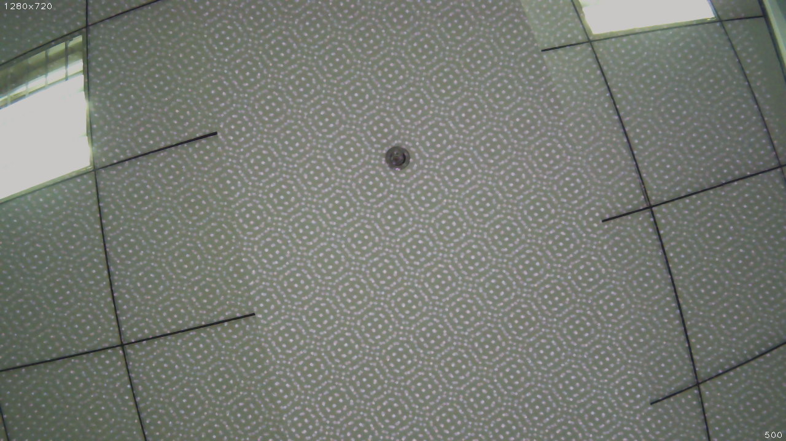

设定打开参数¶
设定图像分辨率¶
通过设置 params.stream_mode 参数，就可以设定图像的分辨率。
注解
图像分辨率现在支持4种: 单目640X480，1280x720 和双目1280x480， 2560x720
参考代码片段:
// Stream mode: left color only
// params.stream_mode = StreamMode::STREAM_640x480; // vga
// params.stream_mode = StreamMode::STREAM_1280x720; // hd
// Stream mode: left+right color
// params.stream_mode = StreamMode::STREAM_1280x480; // vga
params.stream_mode = StreamMode::STREAM_2560x720; // hd
设定图像帧率¶
通过设置 params.framerate 参数，就可以设定图像的帧率。
注解
图像帧率有效值(0-60),分辨率在2560X720时帧率有效值为(30),可以参考 分辨率支持列表
参考代码片段:
// Framerate: 10(default), [0,60], [30](STREAM_2560x720)
params.framerate = 30;
设定图像模式¶
通过设置 params.color_mode 参数，就可以设定图像的模式。
COLOR_RAW 为原图， COLOR_RECTIFIED 为矫正图。
参考代码片段:
// Color mode: raw(default), rectified
// params.color_mode = ColorMode::COLOR_RECTIFIED;
设定深度图模式¶
通过 params.depth_mode 参数，就可以设定深度图的模式。
DEPTH_COLORFUL 为着色后的深度图，DEPTH_GRAY 为灰色深度图，
DEPTH_GRAY 为原始深度图。
参考代码片段:
// Depth mode: colorful(default), gray, raw
// params.depth_mode = DepthMode::DEPTH_GRAY;
启用自动曝光及自动白平衡¶
通过设置 params.state_ae 和 params.state_awb 为 true
，就可以启动自动曝光和自动白平衡。
默认自动曝光和自动白平衡是启用的，如果想关闭，可以设置参数值为 false
。
参考代码片段：
// Auto-exposure: true(default), false
// params.state_ae = false;
// Auto-white balance: true(default), false
// params.state_awb = false;
启用IR及其调节¶
通过设置 params.ir_intensity 参数，就可以设定图像的IR强度。
启用IR，就是设定 params.ir_intensity
大于0的值。值越大，强度越高(最大为10)。
参考代码片段：
// Infrared intensity: 0(default), [0,10]
params.ir_intensity = 4;
注解
启用此功能后，你可以看到ir光斑:
启用 IR Depth Only¶
通过设置 params.ir_depth_only 参数，就可以设定IR Depth
Only功能。默认关闭。开启此功能后，IR只作用于深度图像，在图像上不会出现IR光的纹路。
注解
该功能只能在 [2560x720 30fps] 以及 [1280x720,1280x480,640x480 60fps] 下生效。 开启此功能帧率会被平分，例如设置图像帧率为30fps时，获取的图像为15fps，深度图也为15fps。
参考代码片段：
// IR Depth Only: true, false(default)
// Note: IR Depth Only mode support frame rate between 15fps and 30fps.
// When dev_mode != DeviceMode::DEVICE_ALL,
// IR Depth Only mode not be supported.
// When stream_mode == StreamMode::STREAM_2560x720,
// frame rate only be 15fps in this mode.
// When frame rate less than 15fps or greater than 30fps,
// IR Depth Only mode will be not available.
// params.ir_depth_only = false;
调整深度图着色值¶
通过设置 params.colour_depth_value 参数, 默认值是 5000。
参考代码片段:
// Colour depth image, default 5000. [0, 16384]
params.colour_depth_value = 5000;
以上功能参考运行结果，于 Linux 上：
Open device: 0, /dev/video1
D/eSPDI_API: SetPropertyValue control=7 value=0D/eSPDI_API: SetPropertyValue control=7 value=35D/eSPDI_API: SetPropertyValue control=7 value=1-- Auto-exposure state: enabled
D/eSPDI_API: SetPropertyValue control=7 value=0D/eSPDI_API: SetPropertyValue control=7 value=12D/eSPDI_API: SetPropertyValue control=7 value=1-- Auto-white balance state: enabled
-- Framerate: 5
D/eSPDI_API: SetPropertyValue control=7 value=4 SetDepthDataType: 4
-- Color Stream: 1280x720 YUYV
-- Depth Stream: 1280x720 YUYV
D/eSPDI_API: SetPropertyValue control=7 value=0D/eSPDI_API: SetPropertyValue control=7 value=3D/eSPDI_API: SetPropertyValue control=7 value=4
-- IR intensity: 4
D/eSPDI_API: CVideoDevice::OpenDevice 1280x720 fps=5
Open device success
注解
更改参数后需要在sdk的目录下运行
make samples
来使设置的参数生效。
完整代码样例 get_image.cc 。